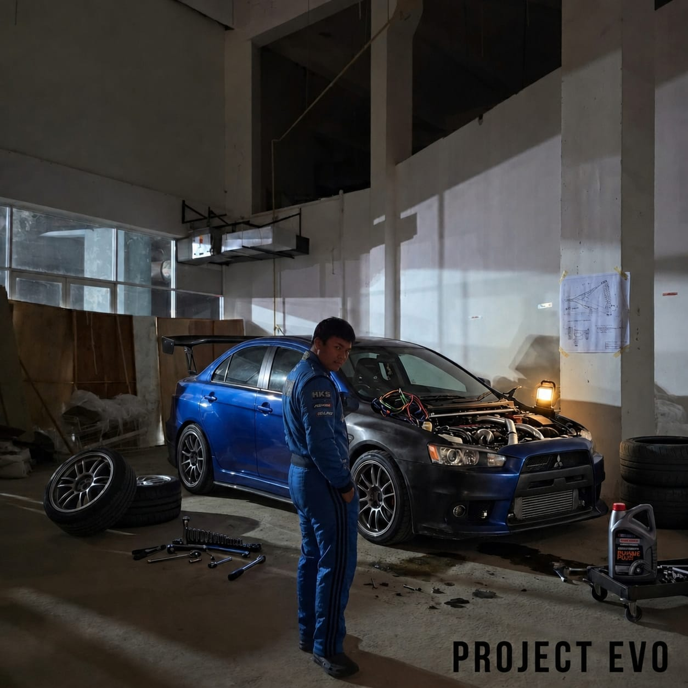

Embedded professional resume preview.

Project Evo is more than just a car project to me—it is the culmination of a dream that began in childhood. My passion for cars started when my father introduced me to the legendary racing game Midnight Club 3. Among all the vehicles in the game, one stood above the rest: the iconic Mitsubishi Lancer Evolution VIII. Its aggressive styling, rally heritage, and unmistakable presence left a lasting impression on me, inspiring a lifelong appreciation for performance cars and automotive culture.
One day, I hope to own a modified pearlescent dark blue Mitsubishi Evolution X, whether it is an original EVO or a carefully built Proton Inspira 2.0 transformed into my vision of the perfect Evolution. I want it to be more than transportation; I want it to be a reflection of my identity, blending classic rally DNA with my own modern style and personality.
My dream is to travel across Malaysia behind the wheel of Project Evo, experiencing the country's roads, mountain passes, and hidden destinations. From spirited drives through winding highland roads to attending car meets, touring events, and motorsport gatherings, I want to build memories alongside fellow enthusiasts who share the same passion for automotive culture.
Beyond road trips, I aspire to participate in rallies, track days, and drifting events. I imagine hearing the turbo spool as I enter corners, pushing my skills further with every lap. Whether it is racing uphill, carving through downhill routes, or sliding through corners at Sepang Circuit, I want to challenge myself while respecting the discipline, skill, and responsibility that motorsport demands.
In this vision, I become known as "Abang Long Akmal"—a name recognized not only for driving ability, but for bringing people together through a shared love of cars. Someone who inspires others to pursue their ambitions, supports the community, and represents the spirit of Malaysian automotive enthusiasts. Perhaps one day, that journey could even lead to starring in my own film as a professional drifter, telling the story of a dream that started with a video game and grew into a lifelong passion.
Project Evo is not simply about owning a car. It is about honoring the inspiration my father gave me, creating my own legacy, and proving that a childhood dream can evolve into something real. Every modification, every kilometer driven, and every new experience will be another chapter in that journey.
"Biarlah awan menghitam dan hujan mula turun. Di sebalik kilat dan guruh yang mengganas, di situlah Abang Long meluncur."
"Let the skies turn black and heavy rain pour down, When you see past the lightning and thunder, that's where I'm racing."
- Akmal, 2026